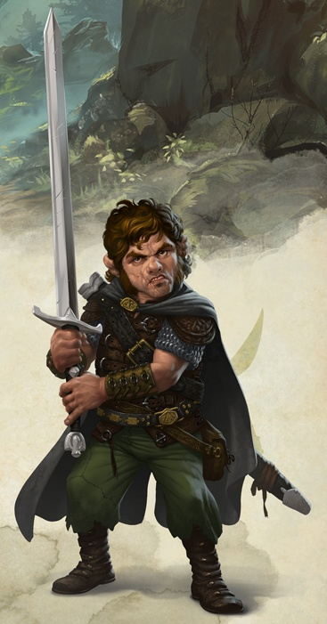

Guerrier halfelin niv 3
Robec Dentdragon
Guerrier (maître de guerre) 3 (900 PX)
Halfelin robuste (h), chaotique bon
Enfant des rues
[ CARACTÉRISTIQUES ]
For 15 (+2) Dex 15 (+2) Con 15 (+2) Int 12 (+1) Sag 10 (+0) Cha 8 (-1)
[ MAÎTRISES ]
Bonus de maîtrise +2
Sauvegardes For +4, Con +4
Compétences Acrobaties +4, Athlétisme +4, Discrétion +4, Escamotage +4 (Perception passive 10)
Armes armes courantes, armes de guerre
Armures toutes les armures, boucliers
Outils kit de déguisement, outils de voleur, outils de cartographe
Langues commun, halfelin
[ COMBAT ]
pv 28 ; DV 3d10
Init +2 ; Vitesse 7,50 m
CA 15 (chemise de mailles 13, Dex +2)
Épée longue. Corps à corps : +4 (1d8+2 tranchant ; polyvalente (1d10))
Arc court. Distance : +4 (1d6+2 perforant ; munition (portée 24 m/96 m), à deux mains)
Dague. Corps à corps : +4 (1d4+2 perforant ; finesse, légère, lancer (portée 6 m/18 m))
[ CAPACITÉS & TRAITS ]
Second souffle (1d10+3 pv/repos)
Style de combat (arme à deux mains)
Sursaut (+1 action/repos)
Étudiant de guerre *
Supériorité au combat (4d8, Attaque précise, Feinte, Parade)
Chanceux (relancer un 1)
Vaillant (AV aux JdS vs effrayé)
Agilité halfeline (peut passer dans l'espace d'une créature de taille supérieure)
Résistance des robustes (avantage aux JdS contre le poison et résistance contre les dégâts de poison)
Secrets de la ville (trouver un passage dans un labyrinthe urbain et se déplacer en ville 2 fois plus rapidement)
[ ÉQUIPEMENT ]
Épée longue, arc court, dague, chemise de mailles, outils de voleur, outils de cartographe, 20 flèches, potion de soins, sac à dos, pied-de-biche, torche (4), boite d'allume-feu, rations/1 jour (4), gourde, corde en soie de 15 m, vêtements de voyage, petit couteau, carte d'une ville, souris, bourse
Coût de l'équipement 216.74 po ; Poids de l'équipement 35.25 kg
15 po
Poids des pièces 0.15 kg
[ PERSONNAGE ]
Taille P / 1 m / 20 kg ; Âge 30 ans (âge apparent 24)
Yeux noisettes ; Peau halée ; Cheveux châtains
Apparence Grand et solide pour un halfelin, Robec arbore presque toujours un air de bouledogue furieux prêt à mordre quiconque passe à sa portée.
Trait Je dors contre un mur ou un arbre avec tout ce que je possède dans les bras.
Je pense que quelqu'un qui est agréable avec moi cache de mauvaises intentions.
Idéal Aspiration. Je vais prouver que je suis digne d'une meilleure vie.
Lien Je parraine un orphelinat pour empêcher d'autres d'endurer ce que j'ai été forcé de supporter.
Défaut Je ne ferai jamais entièrement confiance à quelqu'un d'autre que moi.
Passé du personnage Robec fut dans sa prime jeunesse un petit halfelin doux et rieur, mais par un caprice cruel du destin il se retrouva très jeune, orphelin, errant dans les rues de cette cité qu'il ne connaissait pas. Dépérissant à vue d’œil, se faisant voler par d'autres, plus agressifs que lui, les maigres trognons qu'il réussissait à trouver, les passants indifférents ne donnaient pas cher de sa peau.
Un humain, du nom d'Arnil Forbevent (surnommé « la fouine » mais le petit Robec ne le sut que bien plus tard), le recueillit alors qu'il était presque mort, il le soigna et le nourrit pour que le halfelin reprenne des forces… Mais le destin n'était pas devenu clément d'un seul coup : Forbevent recueillait, et même parfois enlevait, des enfants pour qu'ils travaillent pour lui, les forçant à voler ou commettre d'autres méfaits pour son bénéfice, étant de fait à la tête d'une véritable guilde d'enfants mendiants.
Les années qui suivirent furent terribles, Forbevent était un maître cruel, qui ne reculait devant aucune bassesse pour se faire obéir, affamant ou battant les enfants, parfois jusqu'à la mort. Mais contre toute attente, Robec survécut et s'endurcit, au point d’acquérir une force physique peu commune pour un halfelin, ainsi qu'une adresse au maniement des armes, et finit par se libérer de l'emprise de cet humain méprisable.
Il sillonne depuis, les rues et les alentours de sa cité, afin d’empêcher d'autres crapules du même acabit que ce Forbevent de prospérer. Robec se fait respecter à coups de grognement ou d'épée, gagne sa vie comme mercenaire et donne tout ce dont il n'a pas un besoin immédiat à l'orphelinat local pour éviter à d'autres enfants de tomber entre les griffes d'une autre « fouine » esclavagiste.
Stat et histoire de Leif